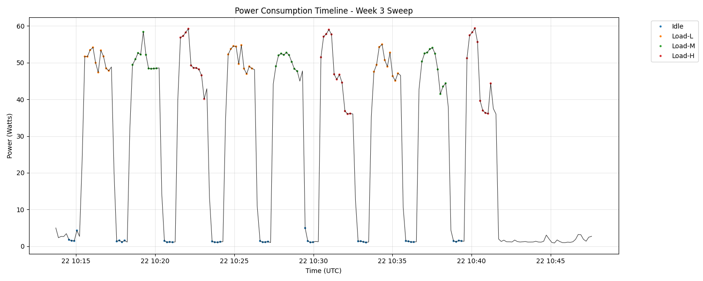
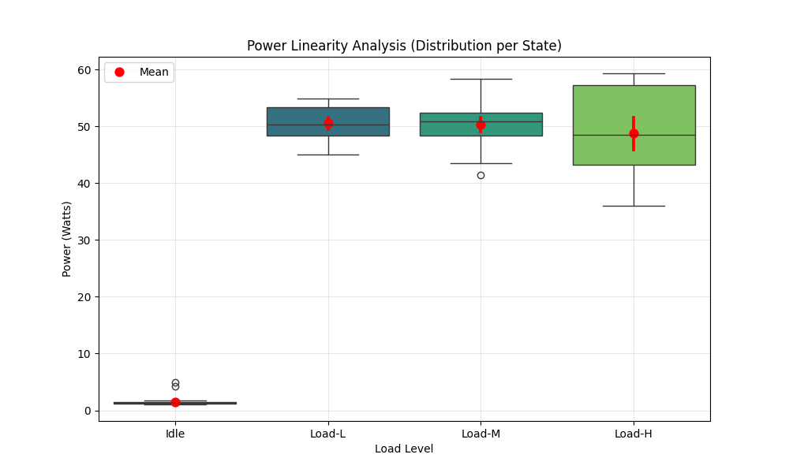
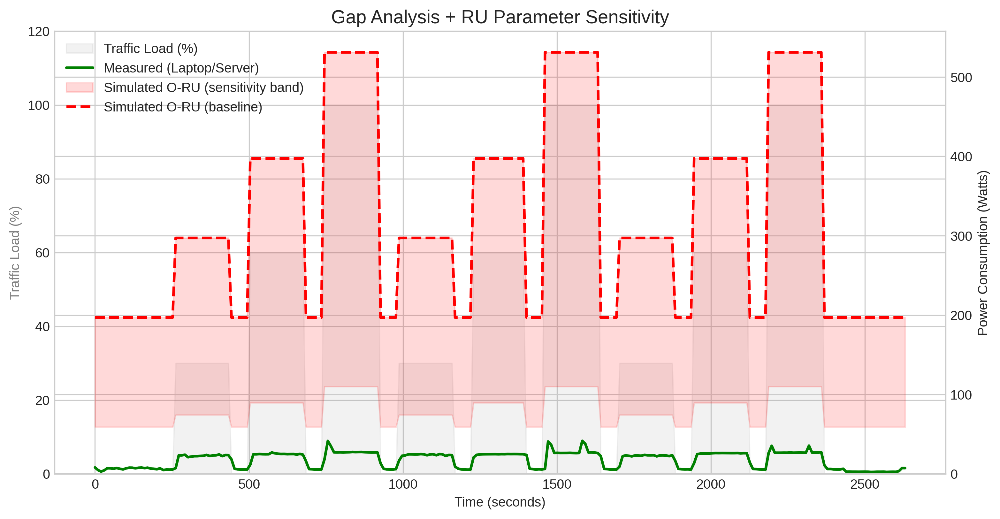
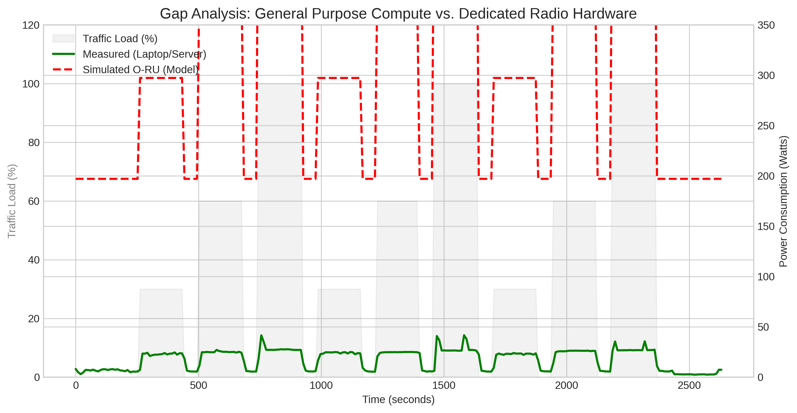
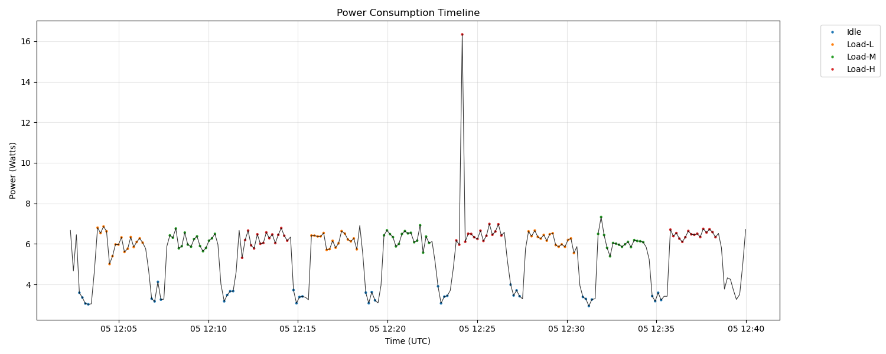
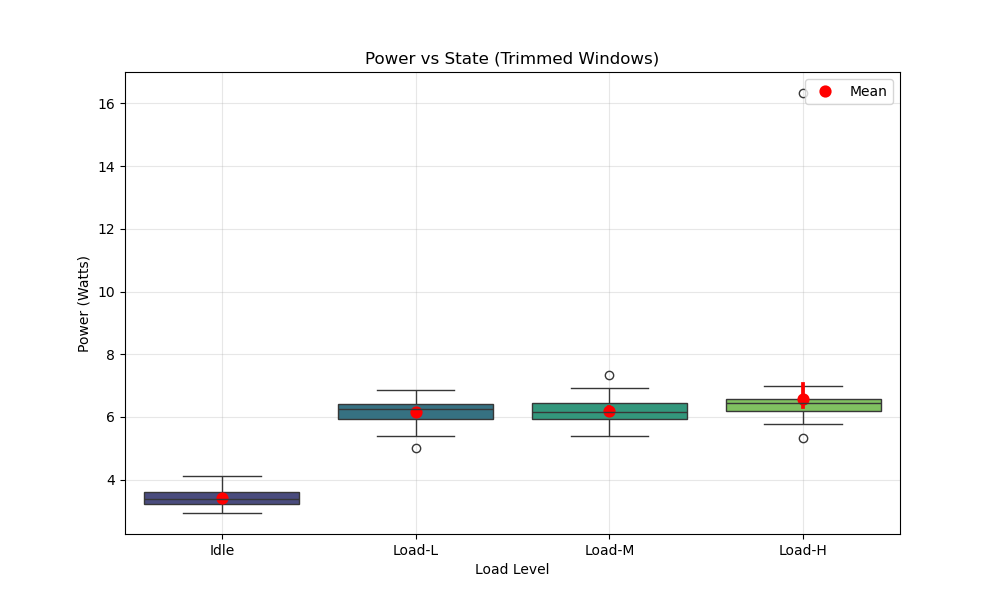

TEEP Final Report Draft (Markdown-first)
2026-02-05
This work develops a reproducible power-measurement methodology for an O-RAN Radio Unit (O-RU), with an initial software-first proxy executed on a general-purpose Linux host. Because RU hardware and lab-grade instrumentation were not always available, we measure platform power using Intel/AMD RAPL energy counters exposed via Linux and collected by Scaphandre.
We define repeatable workload states (Idle, Active-Idle, Load-L/M/H), synchronize scenario boundaries via explicit UTC markers, and compute power/energy statistics on trimmed steady-state windows. A multi-round sweep shows a strong Idle→Active step and a narrower active band across load levels. A “burst vs smooth” proxy experiment demonstrates that race-to-sleep (TDM-style duty cycling) can reduce average platform power by ~48% at iso-throughput, motivating scheduler-level future work.
Scope note: Reported power values are platform power under RU-like workload, not RU AC/DC input power.
Energy consumption in RAN infrastructure is dominated by the base station and radio unit. To compare energy behavior across configurations and ultimately across vendors/hardware, we need a measurement procedure that is: - repeatable (same scenario → same result within noise), - traceable (clear measurement point, units, timestamps), - reviewer-safe (explicit windowing, clear limitations).
Establish a reproducible methodology that can be executed now (software proxy) and later transferred to hardware-grade RU input power measurement without changing the scenario structure.
scaph_host_power_microwatts
scraped at ~10 s cadence.We compute per-state metrics on steady-state windows: - Average power: \(P_{avg}\) (W) - Energy: \(E\) (J) - Throughput: \(T\) (Gbps) - Efficiency (proxy): \(\eta = T / P_{avg}\) (Gbps/W)
Energy is approximated from samples as: \[ E \approx \sum_i P_i \Delta t \]
To avoid boundary transients, we: - record explicit
Start_* / Stop_* markers in UTC, - trim 10 s
from the start and end of each marked segment, - score only the trimmed
windows.
runs/YYYY-MM-DD/...assets/YYYY-MM-DD/plots/A pilot run validated end-to-end logging, markers, and per-state scoring.
| State | Mean Power (W) | Energy (J) | Duration (s) | Throughput (Gbps) | Efficiency (Gbps/W) |
|---|---|---|---|---|---|
| Pure Idle | 1.023 | 91.6 | 100 | ||
| Active-Idle | 1.859 | 319.7 | 181 | ||
| Load-M | 37.631 | 10704.6 | 292 | 97.464 | 2.590 |
Source artifacts: runs/2026-01-20/.
A multi-state sweep (Idle + Load-L/M/H) demonstrates repeatability and the “step-function” behavior:
| State | Mean (W) | Std (W) | CV (%) |
|---|---|---|---|
| Idle | 1.4920 | 0.7964 | 53.38 |
| Load-L | 50.5983 | 2.9533 | 5.84 |
| Load-M | 50.2996 | 3.4350 | 6.83 |
| Load-H | 48.8443 | 8.3225 | 17.04 |
Key observation: once traffic begins, platform power jumps from ~1–2 W to ~50 W, with only modest separation between L/M/H compared to the Idle→Active jump.
Supporting plots: - Timeline:

- Linearity:
We produced a publishable sensitivity plot and a gap overlay comparing the proxy power trace to modeled RU classes.
Key trimmed-window medians (proxy): - Idle median: 5.696 W - Active median: 24.983 W - 30% load median: 23.353 W - 60% load median: 24.983 W - 100% load median: 26.926 W
RU anchors used (P12-style classes): - Micro RU: \(P_{min}=59\) W, \(P_{max}=110\) W - Macro RU: \(P_{min}=197\) W, \(P_{max}=531\) W
Derived ratios (RU / proxy): - \(59/5.696 \approx 10.36\times\) (micro idle vs proxy idle) - \(197/5.696 \approx 34.59\times\) (macro idle vs proxy idle)
Figures: - Sensitivity:

- Gap overlay:
To increase credibility beyond localhost/loopback, we repeated the sweep with two hosts: - Measured host (Linux laptop): power logging + iperf3 client - Sink (Windows PC): iperf3 server
Artifacts: - Run folder: runs/2026-02-05/sweep-120233/ -
Stats table: assets/2026-02-05/plots/stats_summary.md -
Repeatability table:
assets/2026-02-05/plots/repeatability_per_run.md -
Throughput table (client logs):
runs/2026-02-05/sweep-120233/iperf_client_summary.md
Trimmed-window power summary:
| State | Mean (W) | Std (W) | CV (%) | Min (W) | Max (W) |
|---|---|---|---|---|---|
| Idle | 3.4075 | 0.2798 | 8.21 | 2.9361 | 4.1295 |
| Load-L | 6.1682 | 0.3811 | 6.18 | 5.0077 | 6.8600 |
| Load-M | 6.1960 | 0.3657 | 5.90 | 5.3906 | 7.3279 |
| Load-H | 6.5841 | 1.4690 | 22.31 | 5.3178 | 16.3342 |
Notes: - This run used TCP mode (best-effort). The L/M/H labels are nominal; achieved throughput depends on link capacity and TCP behavior. - Offered throughput was Wi‑Fi-limited in this run; achieved receiver rates were ~51–61 Mbps across L/M/H. - Load-H shows a high CV due to a single large spike (max 16.33 W) concentrated in Run 2; repeatability per-run statistics isolate this event.
Supporting plots: - Timeline:

- Linearity:
We tested a “race-to-sleep” proxy using duty-cycled traffic.
| Phase | Duration (s) | Avg Power (W) |
|---|---|---|
| Idle baseline | 60.0 | 4.79 |
| Smooth (30%) | 180.0 | 21.78 |
| Burst (30% duty) | 180.2 | 11.25 |
Savings: \(21.78 - 11.25 = 10.53\) W (48.4%).
This methodology reliably measures platform power response to workload state changes. It does not directly measure: - RU power amplifier behavior, - RU AC/DC input power, - RF output power or EIRP.
The Week 3/4 sweeps suggest the platform enters a high-power operating regime as soon as sustained traffic begins (CPU frequency/uncore/NIC activity), after which incremental throughput changes do not strongly increase platform power.
Our observations are consistent with the recurring theme in base-station power modeling literature: static/offset power dominates at low load, so efficiency gains require enabling real sleep states rather than only reducing utilization.
For an annotated literature bridge (working notes), see: - “How Much Energy is Needed to Run a Wireless Network?” (E³F framework; static power issue) - “Energy Efficiency Improvements through Micro Sites …” (offset power importance) - “A Parameterized Base Station Power Model” (load/bandwidth/antenna parameterization) - “Deploying Dense Networks for Maximal Energy Efficiency …” (circuit power dominance; multiplexing)
These criteria are chosen to be practical for an internship report while still being reviewer-safe.
For each state (Idle, Active-Idle, Load-L/M/H), compute the coefficient of variation: \[ CV = \frac{\sigma}{\mu} \times 100\% \]
Proposed thresholds (steady-state, trimmed windows): - Load states (L/M/H): target \(CV \le 10\%\) (good), \(CV \le 5\%\) (strong). - Active-Idle: target \(CV \le 10\%\). - Idle: may exhibit higher CV due to low absolute power; accept if Idle is clearly separated from Active band and the windowing policy is consistent.
/sys/class/powercap).http://localhost:8080/metrics.iperf3 installed.Start Scaphandre (Docker example):
sudo docker run --rm --privileged --pid=host \
-p 8080:8080 \
-v /proc:/proc:ro \
-v /sys:/sys:ro \
hubblo/scaphandre prometheus --address 0.0.0.0 --port 8080Start iperf3 server (same host for loopback experiments):
iperf3 -sUse a separate sink host to avoid loopback artifacts.
Notes for Windows/WSL sink: - Simplest: run iperf3
server natively on Windows (better throughput, fewer networking
surprises). - If you run the server inside WSL2, inbound connections may
require Windows port forwarding due to WSL2 NAT.
This produces a new run folder containing power_uw.txt,
markers.csv, and per-segment iperf logs.
./scripts/run_week4_gap_run.shOptional overrides (choose targets that match your link; e.g., 1 GbE
cannot sustain 30G):
TARGET_HOST=127.0.0.1 MODE=udp TARGET_L=30G TARGET_M=60G TARGET_H=90G \
OUTPUT_DIR=runs/$(date -u +%Y-%m-%d)/sweep-01 \
./scripts/run_week4_gap_run.shAnalyze and generate plots/stat summaries:
python3 scripts/analyze_week3_data.py runs/2026-01-28/sweep-01Run:
./scripts/run_burst_experiment.shNotes: - The run artifacts go under
runs/YYYY-MM-DD/burst-experiment/. - The analysis script
currently reads power_uw.txt from the repository root (not
from the run folder). If your power log is stored elsewhere,
copy/symlink it to ./power_uw.txt before running the
analysis.
Analyze:
python3 scripts/analyze_burst_experiment.pyIf you have pandoc installed:
pandoc docs/FinalReport/00_Final_Report_Draft.md -o final_report.pdfdocs/FinalReport/.docs/StudyNotes/.runs/ and derived plots under
assets/.assets/2026-02-02/Paper1.mdassets/2026-02-02/Paper2.mdassets/2026-02-02/Paper3.mdassets/2026-02-02/Paper4.md